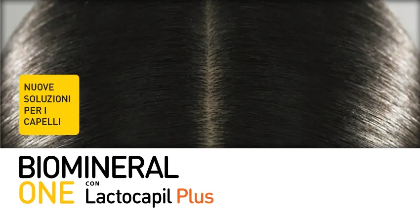
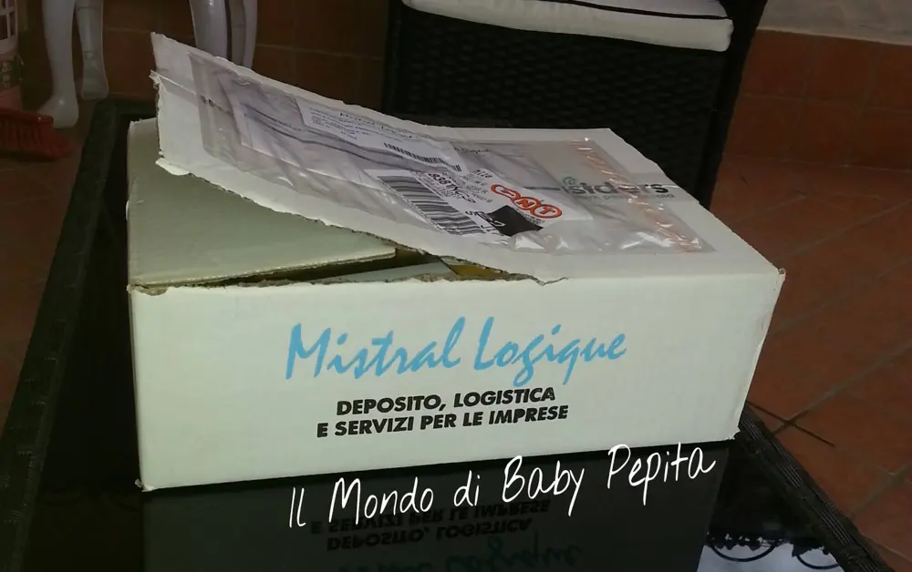
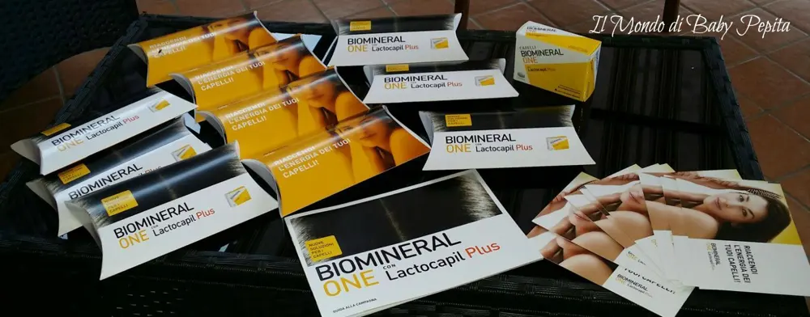
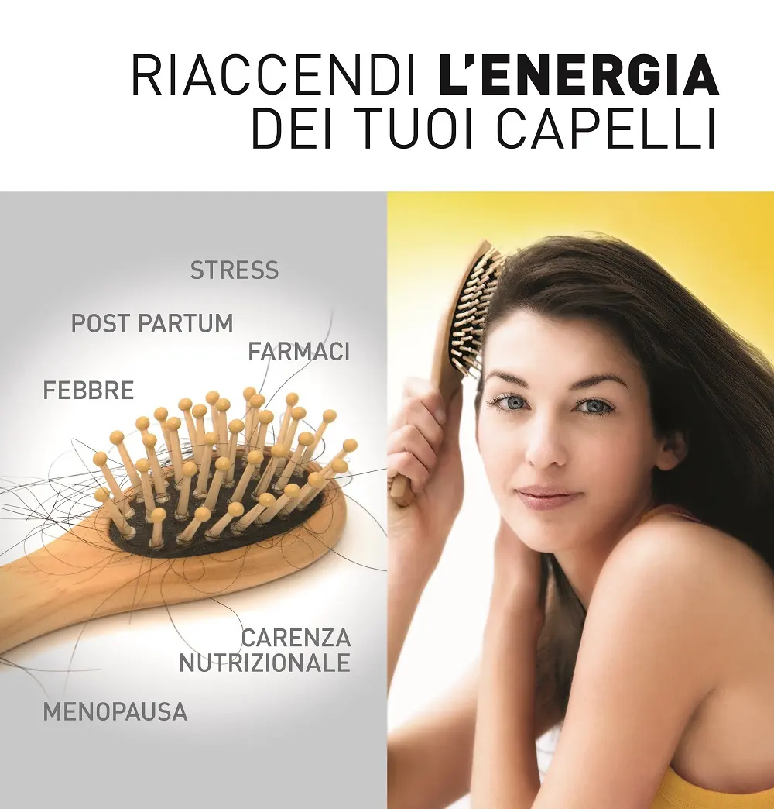
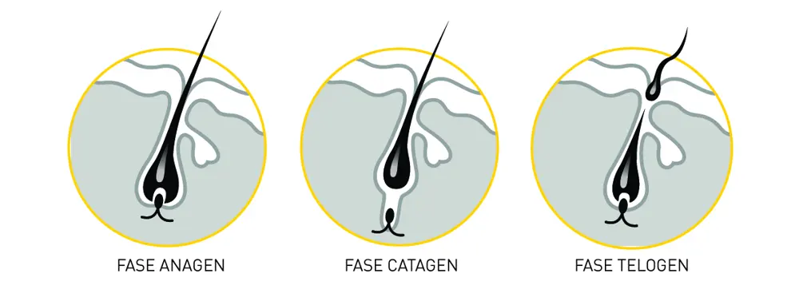
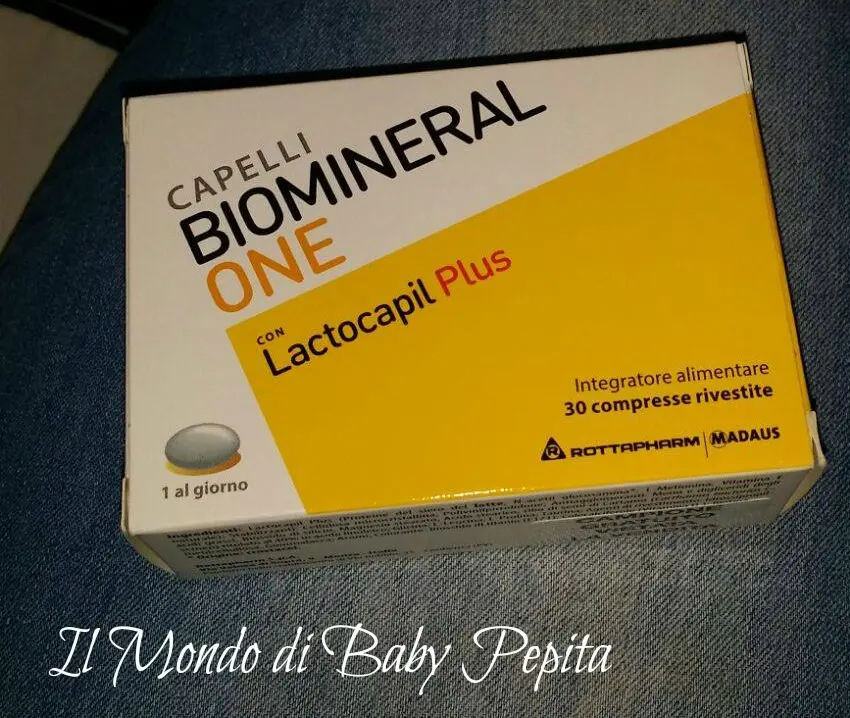
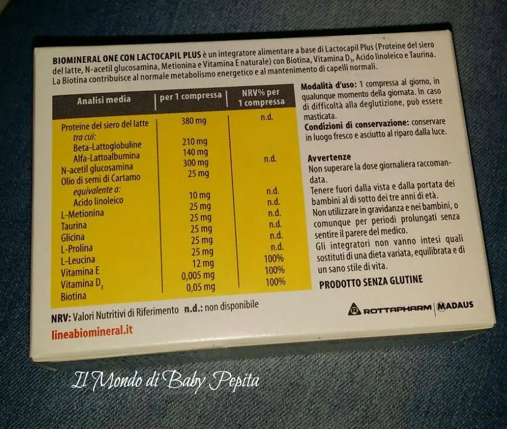

Biomineral ONE
Heilà ragazzuole. .Conoscete THE INSIDERS?
Vi spiego brevemente:
The Insiders è una rete di consumatori per una pubblicità passaparola.
Ogni insiders (ovvero utente registrato a questa rete) testa gratuitamente prodotti importanti e condividono le proprie opinioni o anche il prodotto in sè con amici, parenti o chicchessia al fine di far conoscere appunto il prodotto in tutti gli aspetti . Ovviamente non a tutte le campagne veniamo scelti ma con un pò di fortuna a qualcuna di interessante si riesce a prendere parte come succede a me.
Detto ciò e spiegato un pò di cose vi dico che un paio di mesi fa sono stata appunto scelta per una delle loro campagne, questa volta vi parlerò di capelli.Il prodotto che dovevo testare e far provare è

Sono stata fornita di scatole con pillole per me e per i miei amici e di opuscoli per informare ed informarmi.3

Questo è tutto ciò che conteneva il pacco
Sapevate che perdiamo più di 100 capelli al giorno?
Ogni volta ci sono molteplici fattori che provocano la caduta quali assunzioni di farmaci, squilibri ormonali, disordini alimentari, stress, esposizione ai raggi solari, inquinamento atmosferico e nella donna il periodo post partum.
In questi casi BioMineral ONE può essere d'aiuto in quanto è un integratore alimentare a base di Lactocapil Plus con Biotina, Vitamina D3, Acido Linoleico e aminoacidi come Leucina, Prolina e Glicina.

I nostri capelli nascono, crescono e cadono seguendo un ciclo vitale distinto in 3 fasi. Fase anagen o di crescita: ha una durata da 3 a 7 anni. In questa fase le cellule della papilla dermica si moltiplicano provvedendo alla crescita del capello. Fase catagen o di arresto della crescita: ha una durata di circa 3-4 settimane. Durante questa fase le cellule della papilla dermica smettono di riprodursi. Fase telogen o di riposo: di circa 3 mesi. Durante questa fase il capello cade e un nuovo capello inizia la sua attività, entrando in anagen. Quando il capello cade il follicolo pilifero, considerato la parte attiva del capello, ha già pronto un nuovo capello per sostituirlo.


